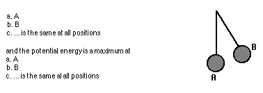
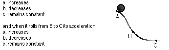
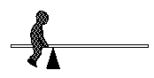

Physics 7110 Midterm Exam Name ______________________
1. In which case would you have the largest mass of gold? If your chunk of gold weighed 1 newton on the
a. moon
b. Earth
c. planet Jupiter
d. would be the same on each
This is because
e. on the moon a greater mass of gold is required for the gravitational force to equal 1 N
f. weight and mass are directly proportional to each other
g. gravitational force per mass is greatest on the most massive planet.
2. A pendulum bob swings back and forth shown in the sketch. The kinetic energy of the bob is maximum at position

3. The moon does not fall to the earth because
a. the net force on it is zero
b. it is being pulled by the sun and planets as well as the earth
c. it is beyond the pull of the earth's gravity
d. ... but it does fall!
More specifically , the moon
e. is subject to both centripetal and centrifugal forces
f. interacts with all massive bodies, both near and far with similar strengths
g. is free of air resistance as well as other earthly influences
h falls away from the straight line it would follow if there were no gravity.
4. The body chiefly responsible for ocean tides is the
a. moon
b. sun
chiefly because
c. the moon is closer to the earth than the sun and pulls it harder
d. gravitational pull by the moon is less than that of the sun
e. the difference between the moon's pull on the near and far sides of the earth is appreciable
5. Picking up a weight which is far out in front of you is bad for the back principally because
a. you may fall on your nose
b. the weight has a long lever arm while your back muscles have a very short lever arm to produce a balancing torque.
c. the torque exerted by the weight is greater than that exerted by the back muscles.
6. A person is attracted toward the center of the earth by a gravitational force of 500 N. The force with which the earth is attracted toward the person is
a. 500 N
b. infinitesimally small
c. billions and billions of tons
principally because
d. both forces in question make an action/reaction pair
e. the mass of the person is negligible compared to the mass of the earth
f. the earth itself weighs billions of tons
g. of inertia
7. "Centrifugal force" is an apparent reality to observers in a frame of reference which is
a. moving with constant velocity
b. an inertial frame
c. at rest
d. moving in a curved path.
8. In a collision with a tree, the impact force on a car will be lessened by
a. building the car rigidly so that it will not collapse
b. minimizing the time of the collision
c. designing the car so that it will collapse
d. making the car heavier
9. If a car is traveling at a constant speed down a straight level road, it can be said that the forward force on the car
a. is greater than the frictional drag force
b. is less than the frictional drag
c. is equal to the frictional drag
10. A Mack truck and a volkswagen collide
a. The force is greater on the volkswagen
b. The change in momentum is greater for the volkswagen
c. the change in velocity is greater for the VW
c. the impulse of force is greater for the VW
11. A car increases its speed from 60 to 65 miles per hour in the same time that a bicycle increases its speed from rest to 5 miles per hour. In this case the acceleration is greatest for the
a. car
b. bicycle
c. ... is the same for each
principally because
d. the car undergoes the greatest changes in velocity
e. the bicycle has considerably less mass
f. both undergo equal increases in speed during the same time interval
12. A ball is dropped. According to Newton's Third Law, the action force is the earth's pull on the ball, and the reaction force is
a. air resistance acting against the ball
b. acceleration of the ball
c. the ball's pull on the earth
d. non-existent in this case
13. An object is in free fall near the surface of the Earth. At one instant it is traveling at a speed of 50 meters per second. Exactly one second later its speed is about
a. 10 m/s
b. 50 m/s
c. 60 m/s
d. 100 m/s
This is because
e. no net force acts on the object wile in its state of free fall
f. it gains a speed of nearly 10 m/s for each second it is falling
g. its velocity nearly doubles each second
14. If a car travels further during a collision (i.e., collapses more)
a. more work will be done on it.
b. the impulse on the occupants will be less
c. the change in momentum will be less
d. the average force of impact will be less
15. An 120 lb kid sits 6 ft from the pivot on a see-saw. How far must a 80 lb kid sit from the pivot to balance him?
a. 9 ft
b. 4ft
c. 8 ft
d. he can't balance the 120 lb kid.
16. A projectile shot straight up reaches a height of 100 ft . A projectile shot with twice the velocity will reach a height of
a. 100 ft
b. 141 ft
c. 200 ft
d. 400 ft
17. If a constant net force is applied to a body, the body is
a. accelerating
b. moving at constant speed
c. at rest or moving at constant velocity
18. Ball A is dropped from rest as ball B is shot horizontally. The ball that hits the ground first is
a. Ball A
b. Ball B
c. both will hit at the same time
The reason for this is because
d. ball A has a lesser distance to travel
e. ball B is acted upon by an additional force
f. both balls fall the same vertical distance with equal acceleration
19. If one doubles the speed of a moving body, one also doubles its
a. acceleration
b. momentum
c. kinetic energy
d. potential energy
e. energy
20. A 200 lb skydiver reaches a terminal velocity of about 180 miles per hour and his velocity then stays constant. The air resistance force on him after he reaches terminal velocity is:
a. 180 lbs
b. 200 lbs
c. 20 lbs
d. 380 lbs
e. cant be determined from data given
21. A projectile is fired horizontally with a speed of 40 m/sec. Air friction is negligible.
a. the horizontal speed will decrease at 9.8 m/s
2 because of gravity.b. the horizontal speed will remain the same during the motion
c. the horizontal speed will increase as it falls.
22. In the absence of air resistance, a boulder and a pebble dropped from rest will fall with equal
a. momenta
b. acceleration
c. kinetic energies
d. ... all of these
The reason that this quantity(s) is not greater for the heavier boulder as compared to the lighter pebble is because
e. both the boulder and the pebble fall at the same speed
f. the initial potential energies of each is the same
g. gravitation force acting on each is the same
h the greater gravitational force on the boulder acts on a correspondingly greater mass.
23. A 100 Newton sack of potatoes falls from an airplane. As the velocity of fall increases, the air resistance acting on the falling sack also increases. When air resistance equals 100 Newtons, the acceleration of the sack will be
a. zero
b. 4.9 m/s
2c. 9.8 m/s
2d. 100 m/s
2and the velocity of the sack will be
e. 0 m/s
f. 4.9 m/s
g. 9.8 m/s
h. 100 m/s
i. constant
24. If a 10 kilogram stone and a 1 kg stone are observed to have the same acceleration, this implies
a. the forces on them are the same
b. the ratio of force to mass is the same for each
c. their velocities will be the same
d. their speeds are the same
25. When a car is traveling in a circle at constant speed
a. there is no net force on the car because it is not accelerating
b. there is a net force on the car in the direction the car is traveling
c. there is a net force on the car in the direction of the radius of the circle.
26. One gram of mass at the center of the earth would experience
a. the same gravity force it would experience on the earth's surface
b. less gravity force
c. more gravity force
d. net zero gravity force
27. An object at rest may have
a. speed
b. velocity
c. momentum
d. energy
e. none of these
28. If an object has kinetic energy then it must also have
a. impulse
b. momentum
c. acceleration
d. force
e. none of these
29. Two identical objects are brought to rest from the same initial velocities. The collision which brings one to rest takes twice as long as the collision which stops the other.
a. The longer time implies that the force of impact is half as great.
b. the forces of impact are the same.
c. the longer collision involves a greater total force.
30. a 200 N weight hangs motionless from a string that is attached from the ceiling . The net force acting on the weight is
a. zero
b. 100 N
c. 200 N
and if the string breaks, the net force acting on the weight is
d. zero
e. 100 N
f. 200 N
31. The head of a golf club strikes the ball with a force of 1500 lbs. The ball exerts a force on the club which
a. is very small because of its small mass
b. is larger than the club force because of the brief time of the impact
c. is not determinable because of the complicated interaction
c. is exactly 1500 lbs.
32. A car traveling at 15 m/s requires a 15 meter stopping distance when the brakes are applied. If the same car under the same conditions is traveling at 30 m/s, the stopping distance would be about
a. 30 m
b. 60 m
c. 90 m
d. 120 m
33. A log is hooked to a tractor with a long chain. The tractor is being accelerated forward with a net force of 200 lb. When the chain becomes taut, the log exerts a backward drag force of 200 lb so that it cancels the forward force. The tractor
a. comes to an immediate halt
b. decelerates gradually to a halt
c. continues at the speed it had when the chain went taut
d. continues to accelerate, but slowly.
34. You are hit by a 50 gm snowball traveling at 30 m/s and a 100 gm snowball traveling at 15 m/s
a. the lighter snowball will do more damage because of greater energy
b. they will have equal impacts because of equal momentum
c. the more massive snowball will hit harder
35. The speedometer of a car indicates a constant speed of 30 miles per hour. From this we can say that the acceleration of the car is
a. zero
b. nonzero
c. ... can't really say
36. If an object is thrown downward from a tall cliff, its acceleration while falling
( in the absence of air resistance) will be
a. less than 9.8 m/s
2b. 9.8 m/s
2c. greater than 9.8 m/s
2This is evident from the fact that
d. gravitational force depends upon the state of motion of an object
e. each successive second the speed of the object increases by an additional 9.8 m/s.
f. the object was not simply dropped but thrown, therefore having an initial acceleration of fall greater than zero.
37. A baseball is thrown straight upward. At the very top of its trajectory its instantaneous velocity is zero and its acceleration is
a. zero
b. 9.8 m/s
2c. between zero and 9.8 m/s
2d. none of these
We can better understand by noting that when at its highest point
e there is momentarily no motion
f. its rate of change of motion is still 9.8 m/s
2g. although its velocity is not changing, its direction is
38. An astronaut in an orbiting satellite feels weightless because
a. he is weightless
b. gravity is very weak there
c. the net force on the satellite is zero
d. both he and the satellite are in free fall
39. In referring to how much matter a body contains, we use the term
a. volume
b. mass
c. weight
and the force of gravitational attraction upon a body is
d. weight
e. volume
f. mass.
40. Which of the following has the greater weight
a. 1 kilogram of gold
b. 1 kilogram of feathers
c. ... both weigh the same in the same locality
This follows from the fact that
d. gold is more compact than the mass of feathers
e. weight and mass are directly proportional to each other
41. If the polar ice caps melted and flowed toward the equator, the rotation of the earth would tend to
a. decrease in angular speed
b. be unchanged
c. increase in angular speed
with the result that the day would be
d. slightly longer
e. slightly shorter
f. unaffected
42. Suppose an astronaut in outer space wishes to play a solitary "throw and catch " game by bouncing an elastic ball off a very massive wall. If the ball is as massive as the astronaut
a. she will never catch the first bounce
b. she will catch only one bounce, but never a second
c. her time between catches will decrease as the game progresses
d. her time between catches will increase as the game progresses.
43. The momentum of the punch is stopped by the fighter's jaw. He "rides with the punch" so as to
a. decrease the velocity of the blow
b. increase the time of contact of the blow
and thereby reduce the
c. force
d. impulse
e. momentum
f. work done
44. A freight car rolls along a horizontal track at 5 m/s and hooks onto an identical freight car at rest. The coupled cars will
a. come to a quick stop
b. roll at 2.5 m/s
c. roll at 5 m/s
d. roll at 10 m/s
which is best explained by
e. the law of inertia -- in the absence of external forces, objects in motion will continue to move at constant speed
f. Newton's 2nd law -- the acceleration of the car at rest is equal to the force of impact divided by the mass of the two freight cars
g. momentum conservation -- since twice the mass is moving, the velocity will be half of what it was before the collision.
h. conservation of energy -- kinetic energy after the collision is equal to the kinetic energy before collision.
45. As strange as it may seem it would be just as hard to lift a car on the moon as it is to lift the same car on earth. This is because
z. the mass of the car is independent of gravity
b. the weight of the car is independent of gravity
c. ..Nonsense! A car is much more easily lifted on the moon than on earth
46. As the ball rolls from A to B its velocity increases and its acceleration

47. The boy plays "solitary seesaw" as shown. We can understand this by imagining he has an invisible partner located at the

a. pivot point
b. right end of the board
c. halfway point of the right end of the board.
d. seesaw's center of gravity
Since the seesaw is not rotating, we can say that
e. the net torque on the seesaw is zero
f. potential energy and kinetic energy are equal to each other
g. the boy's and the seesaw's centers of gravity must be equal distances from the pivot point.
h. the boy and the seesaw must have the same weight
48. A satellite in a circular orbit high above the earth travels at a constant speed because
a. gravity is too weak there to speed it up
b. the gravity force acts perpendicularly to the velocity
c. the net force on the satellite is zero
d. centrifugal force cancels the gravity force.
49. The earth and the moon are attracted to each other by gravitational force. The larger earth attracts the smaller moon with a force which is
a. smaller than the force which the moon exerts on the earth.
b. greater than the force which the moon exerts on the earth.
c. equal to the force which the moon exerts on the earth.
This is in accordance with
d. the law of inertia
e. Kepler's laws
f. the conservation of energy
g. the fact that both moon and earth orbit about a common point, the center of mass.
h. the law of action and reaction
50. A block of granite is actually mostly empty space because the atoms making up the granite are
a. in perpetual motion
b. not as close together as they could be
c. held together by electrical forces
d. themselves mostly empty space
51. An object is dropped from rest. After two seconds its speed will be
about
a. 10 m/s
b. 20 m/s
c. 40 m/s
and it will have fallen a distance of about
d. 10 m
e. 20 m
f. 40 m
52. Compared to a 100 lb person at the beach, a 200 pound person requires
a. less than twice as much suntan lotion
b. the same amount of suntan lotion
c. more than twice as much suntan lotion
53. All things being practically equal, if the energy content in gasoline were doubled, then the distance a car should travel per liter of gasoline should be
a. no different
b. double
c. quadruple
If both kinds of fuel are burned in the same time, then compared to the power produced by the combustion of low-energy gasoline, the power produced by the combustion of the higher-energy gasoline should be
a. no different
b. double
c. quadruple
54. A baseball bat hits a ball with a force of 1000 lbs. The bat slows down a bit because the ball exerts a resisting force against the bat of
a. much less than 1000 lbs
b. exactly 1000 lbs
c. more than 1000 lbs
55. A rifle recoils from the bullet it fires. The speed of recoil is small because the
a. force against he rifle is relatively small
b. speed is mainly concentrated in the bullet
c. rifle is relatively massive
d. momentum of the rifle is unchanged
e. impulse against the rifle is conserved.
56. Probably you have seen photographs of astronauts training in chambers of 'weightlessness", where they float in space. These chambers are
a. in airplanes under going a downward acceleration of g
b. shielded from the earths gravitational field
c. beyond the pull of gravity
d. scientific wonders
57. The Earlybird communication satellite hovers over the same point on the earth's equator indefinitely. This is because
a. forces other than earth's gravity act on it
b. it pulls as hard on the earth as the earth pulls on it
c. it is beyond the main pull of gravity
d. it is kept aloft by ground control
e. it orbits the earth in 24 hours
58 When a car rounds a curve at a speed of 30 mi/hr, the road must exert a force of 200 lb toward the center of the curve to keep the car from skidding. At 60 mi/hr on the same curve the required force would be
a. 100 lb c. 400 lb
b. 800 lb d. 50 lb
59. When we say that an object is moving at constant velocity we mean that it is
a. at rest
b. moving at an unchanging speed
c. moving at an unchanged speed in a straight-line path
and that its acceleration is
d. uniform
e. constantly increasing (or decreasing)
f. zero
60. A 2 kg ball traveling a 20 m/s hits a solid wall and bounces back with a velocity of 20 m/s in the opposite direction. The change in the ball's momentum during the collision is
a. zero
b. 40 kg m/s
c. 80 kg m/s
d. impossible to tell without knowing the time of collision
61. Which of the following must be used to obtain the velocity of two masses after they have collided and stuck together?
a. conservation of energy
b. conservation of momentum
c. work-energy principle
Explain why the other two can't be used.
62. What is the difference between energy and power?
63. Why does a skater spin faster when she pulls her ams in?
64. Mass can be said to be a measure of
a. weight
b. inertia
c. force
d. acceleration
65. An object must be accelerating if it moves
a. with constant velocity
b. in a circular path
c. in a straight -line path
because it is undergoing a change in its
d. direction
e. speed
c. net force
66. Suppose you push with 200 N of force against your 1500 N refrigerator and it slides across your kitchen floor at constant velocity. The friction forces of the floor against the refrigerator must be
a. zero
b. 200 N
c. 1300 N
d. 1500 N
e. greater than 1500 N
and the force with which you must push is
f. equal and oppositely directed to the friction force
g. the action force, and the friction the reaction force
h. both of these
i none of these
67. A 400 N person stands on the surface of the earth. If the person were somehow able to stand on a ladder so that he was twice as far from the center of the earth, the measured weight would be
a. 0 N
b. 100 N
c. 200 N
d. 400 N
This would be because
e. he would be above the atmosphere
f. his mass would be the same wherever he was
g. gravitational force obeys an inverse square law